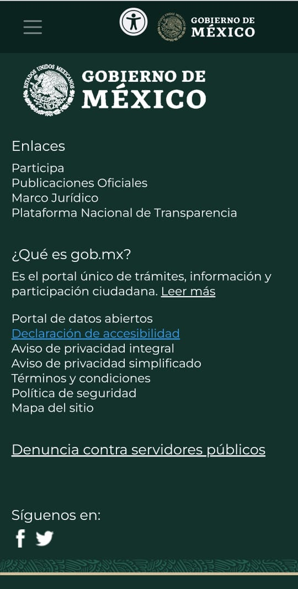

Alignment
DHL Company
DHL Website
DHL web site is a good example of the Alignment Principle, we see in
this screenshot how the elements are verticaly allign, this allows the
user to identify in a easier way what he is looking for, it is also
more readable when items are aligned.
Repetition
Walmart Stores Inc
Walmart Website
This principle is very commun in sales websites like amazon, ebay or
online Stores like walmart, where it is used a pattern, where there is
a repetition of elements .
Contrast
Mexican Government
Mexico Government Website

I identified a good contrast in the colors of this website that uses
light colors of text on dark backgrounds, and the other way around,
when the background is white, the colors used on the text are dark.